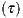

Abstract
Neural integrators are involved in a variety of sensorimotor and cognitive behaviors. The oculomotor system contains a simple example, a hindbrain neural circuit that takes velocity signals as inputs, and temporally integrates them to control eye position. We combined observations of behavior, physiology, and anatomy to study integrator neurons. Two-photon calcium imaging of the larval zebrafish hindbrain was performed while simultaneously monitoring spontaneous eye movements, followed by serial electron microscopy. Integrator neurons were identified as those neurons with activities highly correlated with eye position, and the same neurons were then reconstructed from serial electron microscopic images. Three morphological classes of neurons were observed: ipsilaterally projecting neurons located medially, contralaterally projecting neurons located more laterally and a population at the extreme lateral edge of the hindbrain for which we were not able to identify axons. Based on their somatic locations, we infer that neurons with only ipsilaterally projecting axons are glutamatergic, whereas neurons with only contralaterally projecting axons are largely GABAergic. Dendritic and synaptic organization of the ipsilaterally projecting neurons suggest a broad sampling from inputs on the ipsilateral side. We also observe the first conclusive evidence of synapses between integrator neurons, which have long been hypothesized by recurrent network models of integration via positive feedback.
Combining two-photon calcium imaging with serial electron microscopy (EM) is an emerging approach for studying the structure and function of neural circuits at cellular resolution. In the mouse retina [1] and primary visual cortex [2, 3], this approach has been used to study the structure and function of visual neurons. Here we apply this approach to a population of neurons defined by their encoding of behavioral variables, rather than stimulus variables. Namely, we focus on neurons that carry eye position signals that are located in a hindbrain neural circuit known as the "velocity-to-position neural integrator," or "neural integrator" for short [4, 5]. Our study is done in the larval zebrafish, which has emerged as an important model organism for investigating the relation between neural circuits and behavior [6].
The neural integrator gets its name because the transformation of eye velocity into eye position is the computational operation of integration with respect to time. Integrator neurons are operationally defined as premotor neurons that carry a horizontal eye position signal in their spiking (there is also an integrator for vertical eye movements, but it will not be discussed here). Integrator neurons are thought to send their eye position signals to extraocular motor neurons through monosynaptic and polysynaptic pathways. They are also thought to receive inputs from multiple convergent pathways that encode eye velocity for every type of eye movement. Therefore, the neural integrator is the “final common pathway” for all types of eye movements in fish [7, 8, 9], rodents [10], non-human primates [11, 12], and humans [13].
Previous attempts to understand how the integrator neurons transforms eye velocity signals to eye position signals have relied on combining single-neuron electrophysiology with light-microscopic dye fills. Intracellular recordings in goldfish hindbrain neurons that exhibited spiking correlated to eye position, followed by anatomical dye fills, show the axons of these neurons send collaterals to areas where other integrator neurons were observed [8]. Similar anatomical observations have been observed in cats [14] and nonhuman primates [15]. These observations have shaped theoretical models to propose that integration can be setup by recurrent excitation between these neurons [16, 17, 18, 19, 20]. More recent imaging methods have relied on two-photon calcium imaging to identify many integrator neurons followed by sparse, targeted single neuron electroporation of fluorescent indicators for anatomical reconstruction [21]. While these studies have delineated the arborization and projection patterns of integrator neurons, they were limited to one or a few neurons in any individual brain and do not reveal locations and the distributions of their input and output synapses. And although the axonal projections could potentially synapse onto dendrites of other integrator neurons, conclusive evidence has been lacking.
We combined two-photon calcium imaging and serial electron microscopy to identify neurons in the neural integrator and reconstruct the same neurons. We found evidence for multiple classes of neurons within the integrator population based on differences in dendritic arborization, axonal projections and synaptic distributions. These include neurons with ipsilaterally projecting axons at medial locations that are inferred to be excitatory, and neurons with contralaterally projecting axons at more caudal locations that are inferred to be inhibitory. In addition, we found neurons at the lateral most edge of the volume, for which we could not identify an axon, and a previously unreported integrator neuron with both ipsilateral and contralateral axonal projections. We identified all chemical synapses in our images by the existence of presynaptic vesicles and postsynaptic densities. Chemical synapses involving integrator neurons contained small vesicles, suggesting the presence of conventional rather than peptidergic neurotransmitters. Finally we report evidence for direct synaptic connectivity between integrator neurons.
To identify putative integrator neurons we performed two-photon calcium imaging of the caudal hindbrain in a 6 dpf larval zebrafish following bolus loading of the calcium sensor Oregon Green BAPTA 1-AM. The functional imaging was restricted to one side where the loading was best and was performed on three planes that were ~8μm apart during spontaneous eye movement. Calcium signals were correlated with eye position to identify integrator somata from the imaged planes (Fig. 1A) [22]. Neurons were identified as integrator neurons if saccade-triggered eye position following an ipsiversive saccade (Fig. 1A,b arrow) was correlated with saccade-triggered average fluorescence (Fig. 1A,c first column) (Pearson coefficient > 0.6). The integration time constants or the level of persistence was quantified as the time constant of an exponential fit to the firing rate profile determined from a deconvolution of the fluorescence data (Fig. 1A, c, dotted line, extend methods). This resulted in the identification of 22 integrator neurons from 3 distinct imaging planes with graded levels of persistence (Sup Fig. 1A, B).
Following functional identification of integrator neurons, the tissue was optically imaged (LM), fixed, stained, sectioned for serial electron microscopy and imaged at a final resolution of 5×5×45 nm (RC, ML, DV) . These images were montaged and aligned to create a 3D electron microscopy volume (EM) (Fig. 1B and Methods). The resulting EM volume extended ventrally from the Mauthner cell axon plane by ~ 60μm, caudally from the border of rhombomere 5/6 by ~ 200μm and laterally from the midline by ~ 100μm. The LM and EM volumes were registered to each other by an affine transform, producing correspondence of labeled neurons and blood vessels (Fig. 1C, Sup. Fig. 1C, Methods). The soma of all 22 integrator neurons from the LM volume were located in the EM volume within the rhombomeres 6,7 and 8 (Fig 1D, colored by time constants).
Cell bodies in the hindbrain of the larval zebrafish follow a stereotypic stripe like pattern of alternating cell bodies and neuropil. Cells within the same stripe typically share the same neurotransmitter identity, and morphology [23, 24, 25]. To extract this stripe like organization, we projected the locations of all cell somata (Fig. 1D, ’o’ symbol) from the high-resolution imaged area onto a single plane. The high-res EM volume contained a total of 2967 somata spread over rhombomeres 5 through 8 (Fig. 1D). The volume also contained well-known landmarks like the Mauthner neuron [26], the axon of the contralateral Mauthner neuron, neurons MiD2 and MiD3 of the reticulo-spinal network [26], and a number of commissural bundles (Fig. 1D). This procedure revealed an alternating pattern of cell somata and neuropil. We were able to locate 3 peaks of cell somata, excluding a peak that corresponds to neurons at the midline, each corresponding to a likely stripe (Fig. 1D, bottom panel, S1-3). The three stripes were labeled based on their proximity to the midline, as medial (S1), intermediate (S2) and lateral stripe (S3) respectively. The medial most stripe S1 aligns with a group of neurons that express the alx transcription factor, that also expresses glutamate. More dorsally, this stripe is laterally abutted by cells that express the engrailed -1 transcription factor which expresses glycine [27, 24]. Previous work has show that at this depth (below the level of the Mauthner axon) the vast majority of integrator neurons are not glycinergic [21]. The intermediate stripe S2 corresponds to neurons known to express the transcription factor dbx1b [24]. The majority of integrator neurons in this stripe express GABA, while a small minority express glutamate. At the ventral locations explored here, integrator neurons in this stripe are almost exclusively GABAergic [21]. The lateral most peak S3 of neurons corresponds with the expression of the barhl transcription factor, which is also thought to be glutamatergic [28, 24].
After the identification of the integrator neurons in the EM volume, we reconstructed all 22 integrator neurons and annotated the pre- and postsynaptic locations for these neurons (extended methods). We first characterized some of the anatomical properties that were common to all integrator neurons.
The somatic locations of the 22 integrator neurons were distributed over ~23 µm in the dorsoventral axis and along the entire rostrocaudal extent of the imaged volume. A subset of these neurons were located very close to the midline and at the rostral edge of the imaged volume, close to the border of rhombomeres 6,7 and at the caudal end of the imaged volume, located in rhombomere 8, roughly between myotomes 1, 2. Another subset of neurons was located at the lateral end of the volume in rhombomere 8. The diameters of the integrator neurons were normally distributed, with a mean of 4.5±0.6μm (mean ± standard deviation). In general, the size of the somata was proportional to the persistence level of the neurons, with larger neurons exhibiting higher degree of persistence (Sup. Fig. 1B (right), Pearson coefficient = 0.4, p= 0.059). On average 3.3±1.5 neurites emerged from the somata, and traveled ventrally.
We annotated 320 presynaptic (green circles, Fig. 2) and 2195 postsynaptic sites (red circles, Fig. 2) on the 22 integrator neurons. Synapses were identified by the presence of a presynaptic vesicle pool and an opposing postsynaptic density (PSD). Synapses from or onto integrator neurons contained small vesicles, presumably containing a conventional neurotransmitter. Elsewhere in the volume we did identify synapses with dense core vesicles, presumably containing a peptide neurotransmitter (Sup. Fig. 2A). We were unable to differentiate synaptic membranes as symmetric or asymmetric. Symmetric synapses are associated with many flat vesicles, instead at synapses we do not observe many vesicles that were flat. Similarly, rather than observing a density that extended asymmetrically into the postsynaptic cell, we observe a presynaptic density (Sup. Fig. 2E).
The presynaptic site was generally at a varicosity in the axon with vesicles throughout. Opposing the postsynaptic density, a small, denser cluster of vesicles was typically observed, along with the presynaptic density. These features are consistent with the idea of a presynaptic active zone. The number of presynaptic sites on a neuron averaged 62.3±39.2. This is an underestimate of the number of output synapses from an integrator neuron, because most axonal arbors were cut off by the borders of the volume. If statistics are restricted to the 3 neurons that were more complete than others, there were 84±48.5 presynaptic sites.
The postsynaptic densities were observed as a darkening of the membrane, indicative of more electron dense regions, corresponding to more protein density. The number of postsynaptic sites on a neuron averaged 99.7±72.4. This is a reasonable estimate of the number of input synapses to an integrator neuron, because most dendritic arbors were reconstructed in their entirety.
Along the somatic membrane, a darkening of the membrane interrupted by small gaps was often observed (Sup. Fig. 2B). The darkening persisted over multiple serial sections, suggesting that it was not an artifact of tissue preparation or imaging. These darkenings were visible between somata of integrator-integrator and integrator-non-integrator neurons. We speculate that these darkenings are some kind of cell junction. Although it has been shown that gap junctions exist in the developing larval zebrafish hindbrain [29], we cannot be sure due to the image resolution.
Dendrites were defined by the absence of presynaptic vesicles and the presence of postsynaptic densities. They were mostly oriented ventral to the location of the somata. Dendrites were smooth rather than spiny. Some dendrites exited the imaged volume, leading to incompletely reconstructed neurons. Neurons with small dendritic arbors were completely reconstructed and did not have any dendrites that exited the imaged volume.
We defined axons as neurites with a) presynaptic vesicles or b) for cases where there were no presynaptic vesicles, define them as putative axons using additional anatomical cues (addressed below). Regions of transition, from dendrite to axon, we termed axon initiation sites. Example axon initiation sites are indicated in Fig. 2, showing the dendrite (neurite with red postsynaptic sites) turning into axons at the axon initiation (open arrow). The main trunk of the axon extended rostrally and ventrally (Fig. 2 A, B). From the main trunk emerged mediolateral branches, which we will term collaterals. Those at the rostral extreme of the volume appeared to overlap with the expected location of the abducens motor nucleus (based on its known position within rhombomere r5, 6 Sup. Fig. 3A ), with terminations in r4 as well.
We observed sheaths around some axonal segments. In some locations, we saw that the sheath wrapped around the axon a few times, loosely enough that cytoplasmic space was visible (Fig. 2A, EM panel). This was consistent with the definition of loose myelin [30]. This is different from the more conventionally observed compact myelin which appears as dark as seen elsewhere in the volume. The axon of the neuron in Fig. 2A was intermittently loosely myelinated along its rostrocaudal section. Mediolateral collaterals emerged from the gaps in loose myelin, and remained unmyelinated. Such loose myelin sheaths have been previously reported in goldfish [31].
In 10/22 (45%) integrator neurons the presence of a contralaterally projecting putative axon was identified. Because neurites in the contralateral hindbrain were not reconstructed, we relied on several other features for axon determination. First the putative axons were devoid of any postsynaptic sites on the ipsilateral side (Fig. 2 B, D open arrow to end, no synapses). The lack of postsynaptic sites on these putative axons is similar to the initial segment of conventional axons that were identified by the presence of vesicles, where no presynaptic terminals in the proximal part of the axon were observed, and presynaptic sites emerged only distally (Fig. 2B, initial segment of axon). Secondly, before crossing the midline, the putative axon became engulfed by processes that appeared glial in nature (Fig. 2 C, D, EM inset G). The glial engulfment is consistent with the idea of ‘glial bridges‘ that are instrumental in the guidance of axons during development [32]. Thirdly, these putative axons were thinner than the remaining neurites of the neuron. The diameter of these putative axons were smaller to the other neurites and were similar to the diameters of conventional axons (Sup. Fig. 1E). The mean axonal diameter was less than the mean dendrite diameter, conforming to the textbook notion that axons are thinner than dendrites. These features were applied to determine a neurite to be a putative axon.
A small fraction (~4% or 91/2195) of the postsynaptic sites were located on finger-like projections from dendrites that were enveloped by invaginations of axonal boutons (Fig. 2B, EM panel 2). These projections resemble structures found across multiple species called spinules, and are thought to be present on large, active synapses [33]
We also observed a primary cilium on all 22 integrator neurons. Primary cilium are know to be present in most, if not all mammalian cells, including neurons, and are though to be important for normal development [34]. The average cilium was typically ~ 4μm , is enriched with microtubules, and emerges from the neuron somata very close to the Golgi complex. In some cases, this primary cilium terminated inside processes that resembled glial like structures (Sup. Fig. 2C). Orientation of primary cilium in integrator neurons did not show any orientation preference (Sup. Fig. 2D).
The reconstructed integrator neurons were then divided into three groups based on the spatial projection patterns of the axons that were identified. Below we have detailed the properties of integrator neurons from each of these groups.
Ipsilateral projection only (“ipsi-only”) - Six neurons located at the rostral edge of the volume, were observed to have only ipsilaterally projecting axons (Fig. 3A). Two representatives are shown in Figs. 2A and B. The axons were clearly identified by the presence of en passant boutons with presynaptic vesicles. The somata were located at the rostral extent of the volume, close to the midline (Fig. 3A, Ipsi. only). The axons were oriented along the rostro-caudal (RC) axis with the rostral end more ventral as compared to the caudal end. The average length of axons was ~ 260μm (Sup. Table) with the longest reconstructed axon being 463μm. Two of the six axons had projections that terminate near the site of the abducens motor nuclei (Sup. Fig. 3B) . The axon initiation site was on average located ~ 99μm from the somata. Finally, none of the axons were observed emerging directly from the somata. Instead, dendrites bearing postsynaptic sites turned into axons with presynaptic sites.
Neurons in this group had large dendritic arbors, with the dendrites arborizing over 22.5% of the total imaged volume (Sup. Fig. 4, B, C, D). The dendrites emerged laterally from somata and always extended ventrally. Only in one case the dendrites were observed to cross the midline, as indicated by the presence of postsynaptic sites (Fig. 3A, Ipsi. only, arrowheads). The average diameter of dendrites was significantly larger as compared to the diameter of the axons (Fig. 3F, p < 2×10-3, Ttest).
Contralateral projection only (“contra-only”) - Nine neurons located at the caudal end of the imaged volume contained exclusively contralaterally projecting putative axons (Fig. 3A, Contra only). Like the axons in the ipsi-only group, the putative contralateral axons did not emerge as axons, but started as a neurite with postsynaptic sites, that became axonal. However, unlike the ipsi-only group, the axon initiation site was much closer to the somata. On average, the axon initiation site was located ~ 22μm from the somata, which is significantly shorter than the axon initiation site for the ipsi-only group (p < 0.0003, Ttest).
The average dendritic length was ~ 290µm, and the dendritic arbors of these neurons arborized over 8% of the total volume (Sup. Fig. 4 B, C, D). This was significantly smaller than the dendritic arbors of ipsi-only group, ipsi-contra group combined (p < 0.003, Ttest). The average diameter of dendrites significantly larger than the diameter of the axons (Fig. 3F, p < 2×10-6, Ttest). The diameter of dendrites of the contra-only neurons was significantly smaller to the ipsi-only group (Fig. 3F, p < 0.005, Ttest).
Projection unknown (“unknown”) - Seven neurons were located at the lateral most extent of the animal. For these neurons we did not find any neurites with presynaptic sites nor could we locate a putative axon (Fig. 3A, Unknown). We believe this is most likely because these neurons were not fully represented in the imaged volume and neurites of these neurons exit the volume before the axon was located. The average length of the dendrites for neurons from this group was ~ 220μm, and they occupied on average ~4.9% of the total volume (Sup. Fig. 4 B, C, D).
Finally one integrator neuron did not fit into any of these three groups, its axon had both an ipilateral and contralateral projection (Sup. methods, Sup. Fig. 4A).
Neurons from these three groups had on average, 170, , 84 and 40 postsynaptic (inputs) sites on their dendrites respectively (Fig. 3B, red). The axons from the ipsi-only groups had approximately 58 presynaptic (output) sites (Fig. 3B, green). The pathlength of each synaptic location from the somata revealed that the distribution of the postsynaptic sites along the dendrites among the Ipsi and Contra, unknown groups were significantly different (Fig. 3D, p = 7.2×10-13, p = 1.2×10-10 KStest).
We further computed the synaptic density, the number of synapses per unit length for all neurons, with the assumption that the synapses within each group were uniformly distributed along dendrites. The uniformity assumption was made because the distributions of the locations of postsynapses was found to closely match the location of dendritic arbors (Sup. Fig. 4E). We found the there were ~ 1.5× more input synapses on the ipsi-only group of neurons, as compared to the inputs on the contra-only group of neurons ( ipsi-only group median number 0.42 inputs per micron, contra-only group 0.26 input per micron, Fig. 3C, p = 0.049, Wilcoxon-rank test). Empirically the average intersynaptic distance for the ipsi-only and contra-only groups of neurons are 1±2.3μm and 1.2±1.6μm (Fig. 3E, p = 1.2×10-10 Wilcoxon-rank test).
The dendrites of the neurons from the ipsi-only and contra-only groups were observed to lie along orthogonal planes. The dendrites of the neurons in the ipsi-only group were noticed to lie roughly along a coronal plane with some tilt (Fig. 3A). Similarly, the dendrites of the neurons in the contra neurons were noticed to exhibit some planar organization as well. Fitting a plane through the postsynaptic sites that lie along the dendrites of the neurons in these groups revealed that these planes were nearly orthogonal (82.4∘) to each other (Fig. 4A).
The dendritic arbors of the neurons in these two groups displayed an inversion in the stratification depths. The dendritic arbors of the ipsi-only neurons on average were most abundant at 38.1±8.2μm ventral to its somata (Fig. 4B, top). Whereas the contra-only group was maximal around 12.2±8.2μm ventral to its somata (Fig. 4B, bottom). Interestingly, when we overlaid the stripe patterns computed previously (Fig. 1D) with the stratification profiles of the dendrites along the medio-lateral axis, we see that the dendrites and axons of the ipsi-only group projected arbors that overlapped with neurons along the S1 and S3 stripes , whereas the dendrites of the contra group were located very close the intermediate S2 stripe. Similar loose organization was observed for the other group of neurons (Sup. Fig. 3C).
We also examined the patterns of connectivity between integrator neurons. We found that there exists varying amounts of overlap of the axons of the ipsilaterally projecting neurons (Sup. Fig. 4I) with the dendrites of all other neurons in the volume. More specifically, the overlap at ventro-rostral locations were from axons of ipsi-only neurons onto dendrites of other ipsi-only neurons (Sup. Fig. 4I Ipsi–>Contra). Whereas, the overlap at dorso-caudal locations were from axons of ipsi-only neurons onto dendrites of contra-only and unknown group of neurons (Sup. Fig. 4I).
Furthermore, we found 6 synapses between integrator neurons. Two synapses made by one ipsi-only neuron onto another, and 4 synapses onto three contra-only neurons (Fig. 4C).
We combined two-photon calcium imaging from neurons in the larval zebrafish that were encoding for a behavioral variable (eye-position) with serial section electron microscopy. This was done by registering the light microscopic volume to the electron microscopic volume to locate the same neurons. We were able to reconstruct 22 integrator neurons from the same animal, for which we had both functional and structural information. This procedure revealed the existence of distinct groups of neurons that make up the ipsilateral integrator circuit. This included an excitatory, ipsilaterally projecting group, an inhibitory, contralaterally projecting group and, a third, excitatory group with unknown projections. Finally we provide the first conclusive evidence for synapses between integrator neurons.
Of the 22 integrator neurons, six, rostrally located neurons had exclusively ipsilaterally projecting axons. All but one of these six neurons were medial to the first somata stripe S1, that is thought to contain mostly excitatory, glutamatergic neurons. The axons and dendrites of these neurons display a planar organization, with axons oriented approximately orthogonal to the dendrites (Sup. Fig. 4F). The majority of input synapses onto the dendrites of these neurons lie along a plane approximately normal to the rostro-caudal (RC) axis. This suggests that these neurons are setup to broadly sample from axons that are oriented along the RC axis. The axons of these neurons are oriented along the RC axis with the rostral end more ventral than the caudal end. This suggests that axons from this group can potentially synapse onto dendrites from this group. It has long been theorized that positive feedback via recurrent excitation could be a possible mechanism that can explain long persistent time scales of neuronal activity [18, 19, 35]. Indeed, we observed conclusive chemical synapses from one ipsilataterally projecting integrator neuron onto another ipsilaterally projecting integrator neuron. These facts point to the ipsi group of neurons as a candidate that could support recurrent positive feedback in the integrator circuit.
The second major group of neurons that we reconstructed were the nine caudally located, contralaterally projecting neurons. The somatic location of these neurons lie very close to the intermediate somal stripe S2, that are largely GABAergic neurons. The dendrites of these neurons arborized over a smaller area, and stratify more dorsally as compared to the ipsi-only group of neurons. The postsynaptic inputs on the dendrites of these cells lie along a plane that is approximately parallel to the RC plane. This suggests that these neurons sample narrowly from inputs along the RC axis. In the goldfish oculomotor integrator, contralaterally projecting neurons are thought to be involved in coordinating activity between the two sides, where each side acts as an independent integrator [36, 37]. Although, we have not reconstructed the contralateral side of the axons, evidence from light microscopic images of contralaterally projecting neurons shows projections that terminate in the dendritic field of the opposing population of inhibitory integrator neurons [21].
Of the remaining integrator neurons, one had both an ipsilateral and contralaterally projecting axon. The location of its somata corresponded with the S2 stripe, which can be inferred as GABAergic. The remaining integrator neurons were located at the lateral edge of the animal corresponding to the lateral most stripe S3 though to express glutamate. Since these neurons are close to the edge of the imaged volume, in all cases, we were unable to trace many neurites from these cells. The axonal projection pattern and potential role of these neurons remains unknown.
Our evidence suggest that at least two of the groups, the ipsilaterally projecting and the contralaterally projecting neurons are unique populations. They have significantly different dendritic morphologies, axonal projections and distributions of postsynapses along their dendrites. The ipsi-only group of neurons has approximately twice as many postsynaptic input sites as the contra-only only group. In both cases, initiation of the axons was from a neurite that contained postsynaptic sites that then gave rise to presynaptic sites. This feature could be important to influence the activity of neurons as these locations are proximal to the somata. The integration time constants of these neurons show graded levels of persistent activity. Time constants of contralaterally projecting neurons were significantly different from the unknown projecting neurons, with the unknown projecting neurons showing faster dynamics (Sup. Fig. 1D). Finally we note that distinguishing axons from dendrites using light microscopy can prove erroneous, since the diameters of the axons and dendrites were very similar and close to the diffraction limit of light.
Our sample of 22 reconstructed integrator neurons is a fraction of the roughly 100 integrator neurons estimated to exist on one side of the larval zebrafish brain [38]. We observed 6 chemical synapses from two ipsilaterally projecting integrator neurons onto other integrator neurons. This observation may be an underestimate of integrator connectivity, for a few reasons. First, there are many neurons in the imaged volume that carried no usable calcium signal at all, largely because they did not take up enough calcium indicator. Some of these neurons are likely to be integrator neurons overlooked by our study, and are potential postsynaptic partners of the reconstructed neurons in our sample. Second, there are integrator neurons outside the imaged volume, and they could receive synapses from our reconstructed integrator neurons. Only three axonal arbors were fully or mostly reconstructed; the rest appeared substantially cut off as their axons left the volume, this is also evidenced by the fact that only two of six ipsilaterally projecting axons project to the abducens motor nuclei, contrary to dye fill experiments, where all ipsilateral axons project to the abducens. Third, we had no possibility of finding connections between neurons on opposite sides of the brain, because only one side of the brain was imaged. Therefore, it is difficult to know whether the two neurons that made synapses onto other integrator neurons are an exceptional case, or representative of a larger population that was incompletely sampled. More definitive information about connectivity patterns between integrator neurons awaits a future experiment with an imaged volume that is large enough to encompass all integrator neurons, and a fluorescent calcium indicator that labels a higher percentage of integrator neurons.
Here we presented ultrastructural anatomical details of different types of integrator neurons and evidence of synaptic connectivity between these neurons. Although we restricted our reconstructions to the unilateral integrator circuit and consequently do not know about the postsynaptic targets of the contralaterally projecting axons, this approach can be used to uncover general rules of connectivity and validate hypothesized theories of temporal integration.
Conceptualization, Methodology, and Writing: A.V, E. A., and H.S.S. Formal Analysis: A.V. and H.S.S. Data Curation: A.V. Visualization: A.V. Investigation: K.D performed two-photon calcium imaging. A.V. acquired serial section EM images with assistance from J.W.L., and assembled the resulting image stack. K.D, A.R. registered the calcium images with the EM images. A.V. and E. A. reconstructed neurons with help from A.R. Funding Acquisition: E.A. and H.S.S.
We are grateful to Juan Carlos Tapia, Richard Schalek and Ken Hayworth for assisting us with tissue preparation, the ATUM serial sectioning procedure, and the WaferMapper software for EM imaging. Stefan Saalfeld, Albert Cardona, and Ignacio Arganda-Carreras answered questions about the TrakEM2 plugin for FIJI/ImageJ. Uygar Sümbül assisted with importing skeletons into MATLAB. We thank Heather Sullivan for tissue processing and optimization, Ashleigh Showler, Gurion Marks and Anjin Xianyu for assistance with reconstructions and alignment, Melanie Lee for sharing light microscopic images of neurons. We benefited from helpful discussions with David Tank and Kanaka Rajan. HSS acknowledges funding from the Mathers Foundation, Gatsby Foundation, Human Frontier Science Program, NIH/NINDS award 5R01NS076467, and ARO MURI award W911NF-12-1-0594.
1. Kevin L Briggman, Moritz Helmstaedter, and Winfried Denk. Wiring specificity in the direction-selectivity circuit of the retina. Nature, 471(7337):183–188, March 2011.
2. Davi D Bock, Wei-Chung Allen Lee, Aaron M Kerlin, Mark L Andermann, Greg Hood, Arthur W Wetzel, Sergey Yurgenson, Edward R Soucy, Hyon Suk Kim, and R Clay Reid. Network anatomy and in vivo physiology of visual cortical neurons. Nature, 471(7337):177–182, March 2011.
3. WCA Lee, V Bonin, M Reed, B J Graham, and G Hood. Anatomy and function of an excitatory network in the visual cortex. Nature, 2016.
4. Guy Major and David Tank. Persistent neural activity: prevalence and mechanisms. Current Opinion in Neurobiology, 14(6):675–684, December 2004.
5. M Joshua and S G Lisberger. A tale of two species: Neural integration in zebrafish and monkeys. NEUROSCIENCE, 296:80–91, June 2015.
6. Rainer W Friedrich, Gilad A Jacobson, and Peixin Zhu. Circuit Neuroscience in Zebrafish. Current Biology, 20(8):R371–R381, April 2010.
7. A M Pastor, R R De la Cruz, and R Baker. Eye position and eye velocity integrators reside in separate brainstem nuclei. Proceedings of the National Academy of Sciences, 91(2):807–811, January 1994.
8. E Aksay, R Baker, H S Seung, and D W Tank. Anatomy and Discharge Properties of Pre-Motor Neurons in the Goldfish Medulla That Have Eye-Position Signals During Fixations. Journal of Neurophysiology, 84(2):1035–1049, August 2000.
9. E Aksay, G Gamkrelidze, H S Seung, R Baker, and D W Tank. In vivo intracellular recording and perturbation of persistent activity in a neural integrator. Nature Neuroscience, 4(2):184–193, February 2001.
10. A M van Alphen, J S Stahl, and C I De Zeeuw. The dynamic characteristics of the mouse horizontal vestibulo-ocular and optokinetic response. Brain research, 890(2):296–305, February 2001.
11. D A Robinson. Integrating with neurons. Annual review of neuroscience, 1989.
12. Freda Newcombe. Neuropsychology quainterface. Journal of Clinical and Experimental Neuropsychology, 7(6):663–681, January 2008.
13. R John Leigh and David S Zee. The Neurology of Eye Movements. Oxford University Press, USA, June 2015.
14. R A McCrea and R Baker. Cytology and intrinsic organization of the perihypoglossal nuclei in the cat. The Journal of comparative neurology, 237(3):360–376, July 1985.
15. H J Steiger and J A Büttner-Ennever. Oculomotor nucleus afferents in the monkey demonstrated with horseradish peroxidase. Brain research, 160(1):1–15, January 1979.
16. B Yeshwant Kamath and Edward L Keller. A neurological integrator for the oculomotor control system. Mathematical Biosciences, 30(3-4):341–352, January 1976.
17. H S Seung. How the brain keeps the eyes still. Proc. Natl. Acad. Sci. USA, 93(23):13339–13344, 1996.
18. H Sebastian Seung, Daniel D Lee, Ben Y Reis, and David W Tank. Stability of the Memory of Eye Position in a Recurrent Network of Conductance-Based Model Neurons. Neuron, 26(1):259–271, April 2000.
19. D Fisher, I Olasagasti, D W Tank, E R F Aksay, and M S Goldman. A modeling framework for deriving the structural and functional architecture of a short-term memory microcircuit. Neuron, 79(5):987–1000, 2013.
20. P J Gonçalves, A B Arrenberg, B Hablitzel, H Baier, and C K Machens. Optogenetic perturbations reveal the dynamics of an oculomotor integrator. Frontiers in Neural Circuits, 8, 2014.
21. Melanie M Lee, Aristides B Arrenberg, and Emre R F Aksay. A Structural and Genotypic Scaffold Underlying Temporal Integration. The journal of neuroscience, 35(20):7903–7920, May 2015.
22. Andrew Miri, Kayvon Daie, Rebecca D Burdine, Emre Aksay, and David W Tank. Regression-Based Identification of Behavior-Encoding Neurons During Large-Scale Optical Imaging of Neural Activity at Cellular Resolution. Journal of Neurophysiology, 105(2):964–980, February 2011.
23. Shin-Ichi Higashijima, Gail Mandel, and Joseph R Fetcho. Distribution of prospective glutamatergic, glycinergic, and GABAergic neurons in embryonic and larval zebrafish. The Journal of comparative neurology, 480(1):1–18, November 2004.
24. Amina Kinkhabwala, Michael Riley, Minoru Koyama, Joost Monen, Chie Satou, Yukiko Kimura, Shin-Ichi Higashijima, and Joseph Fetcho. A structural and functional ground plan for neurons in the hindbrain of zebrafish. Proceedings of the National Academy of Sciences of the United States of America, 108(3):1164–1169, January 2011.
25. Minoru Koyama, Amina Kinkhabwala, Chie Satou, Shin-Ichi Higashijima, and Joseph Fetcho. Mapping a sensory-motor network onto a structural and functional ground plan in the hindbrain. Proceedings of the National Academy of Sciences of the United States of America, 108(3):1170–1175, January 2011.
26. R K Lee, R C Eaton, and S j Zottoli. Segmental arrangement of reticulospinal neurons in the goldfish hindbrain. The Journal of comparative neurology, 329(4):539–556, March 1993.
27. Yukiko Kimura, Yasushi Okamura, and Shin-Ichi Higashijima. alx, a zebrafish homolog of Chx10, marks ipsilateral descending excitatory interneurons that participate in the regulation of spinal locomotor circuits. The Journal of neuroscience : the official journal of the Society for Neuroscience, 26(21):5684–5697, May 2006.
28. Alicia Colombo, Germán Reig, Marina Mione, and Miguel L Concha. Zebrafish BarH-like genes define discrete neural domains in the early embryo. Gene Expression Patterns, 6(4):347–352, April 2006.
29. Shaista Jabeen and Vatsala Thirumalai. Distribution of the gap junction protein connexin 35 in the central nervous system of developing zebrafish larvae. Frontiers in Neural Circuits, 7:91, 2013.
30. D W Caley and A B Butler. Formation of central and peripheral myelin sheaths in the rat: an electron microscopic study. The American journal of anatomy, 140(3):339–347, July 1974.
31. J Rosenbluth and S L Palay. The fine structure of nerve cell bodies and their myelin sheaths in the eighth nerve ganglion of the goldfish. The Journal of Biophysical and Biochemical Cytology, 1961.
32. Michael J F Barresi, Lara D Hutson, Chi-Bin Chien, and Rolf O Karlstrom. Hedgehog regulated Slit expression determines commissure and glial cell position in the zebrafish forebrain. Development (Cambridge, England), 132(16):3643–3656, August 2005.
33. Ronald S Petralia, Ya-Xian Wang, Mark P Mattson, and Pamela J Yao. Structure, Distribution, and Function of Neuronal/Synaptic Spinules and Related Invaginating Projections. NeuroMolecular Medicine, 17(3):211–240, May 2015.
34. Alicia Guemez-Gamboa, Nicole G Coufal, and Joseph G Gleeson. Primary cilia in the developing and mature brain. Neuron, 82(3):511–521, May 2014.
35. Mati Joshua, Javier F Medina, and Stephen G Lisberger. Diversity of Neural Responses in the Brainstem during Smooth Pursuit Eye Movements Constrains the Circuit Mechanisms of Neural Integration. The journal of neuroscience, 33(15):6633–6647, April 2013.
36. Emre Aksay, Itsaso Olasagasti, Brett D Mensh, Robert Baker, Mark S Goldman, and David W Tank. Functional dissection of circuitry in a neural integrator. Nature Neuroscience, 10(4):494–504, April 2007.
37. Owen Debowy and Robert Baker. Encoding of eye position in the goldfish horizontal oculomotor neural integrator. Journal of Neurophysiology, 105(2):896–909, February 2011.
38. Emre Aksay, Robert Baker, H Sebastian Seung, and David W Tank. Correlated discharge among cell pairs within the oculomotor horizontal velocity-to-position integrator. The Journal of neuroscience : the official journal of the Society for Neuroscience, 23(34):10852–10858, November 2003.
39. E Brustein, N Marandi, Y Kovalchuk, P Drapeau, and A Konnerth. "In vivo" monitoring of neuronal network activity in zebrafish by two-photon Ca2+ imaging. Pflügers Archiv, 446(6):766–773, 2003.
40. D Smetters, A Majewska, and R Yuste. Detecting action potentials in neuronal populations with calcium imaging. Methods (San Diego, Calif.), 18(2):215–221, June 1999.
41. Andrew Miri, Kayvon Daie, Aristides B Arrenberg, Herwig Baier, Emre Aksay, and David W Tank. Spatial gradients and multidimensional dynamics in a neural integrator circuit. Nature Neuroscience, 14(9):1150–1159, September 2011.
42. Kayvon Daie, Mark S Goldman, and Emre R F Aksay. Spatial patterns of persistent neural activity vary with the behavioral context of short-term memory. Neuron, 85(4):847–860, February 2015.
43. Juan Carlos Tapia, Narayanan Kasthuri, Kenneth J Hayworth, Richard Schalek, Jeff W Lichtman, Stephen J Smith, and JoAnn Buchanan. High-contrast en bloc staining of neuronal tissue for field emission scanning electron microscopy. Nature Protocols, 7(2):193–206, February 2012.
44. Kenneth J Hayworth, Josh L Morgan, Richard Schalek, Daniel R Berger, David G C Hildebrand, and Jeff W Lichtman. Imaging ATUM ultrathin section libraries with WaferMapper: a multi-scale approach to EM reconstruction of neural circuits. Frontiers in Neural Circuits, 8:68, 2014.
45. Narayanan Kasthuri, Kenneth Jeffrey Hayworth, Daniel Raimund Berger, Richard Lee Schalek, José Angel Conchello, Seymour Knowles-Barley, Dongil Lee, Amelio Vázquez-Reina, Verena Kaynig, Thouis Raymond Jones, Mike Roberts, Josh Lyskowski Morgan, Juan Carlos Tapia, H Sebastian Seung, William Gray Roncal, Joshua Tzvi Vogelstein, Randal Burns, Daniel Lewis Sussman, Carey Eldin Priebe, Hanspeter Pfister, and Jeff William Lichtman. Saturated Reconstruction of a Volume of Neocortex. Cell, 162(3):648–661, July 2015.
46. Albert Cardona, Stephan Saalfeld, Johannes Schindelin, Ignacio Arganda-Carreras, Stephan Preibisch, Mark Longair, Pavel Tomancak, Volker Hartenstein, and Rodney J Douglas. TrakEM2 software for neural circuit reconstruction. PLoS ONE, 7(6):e38011, 2012.
47. Mark H Longair, Dean A Baker, and J Douglas Armstrong. Simple Neurite Tracer: open source software for reconstruction, visualization and analysis of neuronal processes. Bioinformatics, 27(17):2453–2454, September 2011.
48. Leung-Hang Ma, Charlotte L Grove, and Robert Baker. Development of oculomotor circuitry independent of hox3 genes. Nature Communications, 5:4221, 2014.
Figure1: Functional and structural imaging of integrator neurons.
(A) (a) Top - Larval zebrafish schematic showing the region where functional imaging was performed (black box) located in the
hindbrain.
Bottom - A single imaging plane showing neurons loaded with calcium indicator OGB-1. Identified integrator neurons are
show in colored circles. Colors reflect the level of persistence of the neuron. Scale bar = 20μm
(b) Spontaneous eye movement (top, blue line) showing saccades (sharp vertical lines) and post-saccadic fixations (horizontal
lines). Ipsilateral saccades are indicated by black arrows. Colored traces below are the changes in fluorescence from individual
neurons in (a). Colors represent the persistence level of the neuron.
(c) Normalized fluorescence and firing rate of neurons in (a). Thick line shows the average, with shaded region showing the
SEM. Dotted line is the exponential fit to determine persistence time constant, represented as log.
(B) (Top) Serial-sections for electron microscopy were collected on a tape in an automated manner. (Bottom left) Overview
image of single section. The region-of-interest that corresponding to the functionally imaged area was defined
by black box for high-resolution imaging. (Bottom right) All such images were aligned to generate a 3D EM
volume.
(C) Registration of light microscopic volume to electron microscopic volume is used to locate the neurons that
were involved in the behavior. Red arrows indicate the same features in both LM and EM. Scale bar = 20μm
(D) An example EM plane showing anatomical landmarks, Mauthner neuron (black star), Mi2 (red stars), Mi3 (blue stars) and
Ca (green stars). Anatomical locations of all identified integrator neurons (colored circles) and all remaining cell bodies in the
imaged EM volume ( ‘∙’ symbol). Colors of the integrator neurons correspond to the persistence time of the neuron. Lower
panel is a distribution of all neurons along the medio-lateral axis with integrator neurons overlaid. Dotted lines (cyan) are the
identified somata stripes S 1-3.
Figure2: Ultrastructural features of Integrator neurons.
(A) Integrator neuron with ipsilaterally projecting axon (dark lines) with presynaptic (green circles) and dendrites (light lines)
with postsynaptic (red circles) locations. Parts of the axon of this integrator neuron are loosely-myelinated. Insets shows axons
with loose myelin (colored), arrows showing individual myelin sheaths. Open arrow head shows the location of axon
initiation.
(B) Integrator neuron with ipsilateral projecting axon. Axon is studded with presynaptic sites that are clustered along neurite.
Inset is a 3D reconstruction of axon termination zone with a large vesicle cloud (blue) with multiple post synaptic densities
(yellow) opposed to the vesicles. Numbers correspond to EM insets showing the synapses. M - Mitochondria, V - Vesicles.
Arrows show the synapses at those locations.
(C) Integrator neuron with contralateral projecting axon. Putative contralateral axon emerges from somata and is engulfed by
glial before crossing the midline. (EM insets at numbered locations G - Glia, A - Axon) Open arrowhead shows the axon
initiation site.
(D) Integrator neurons with only contralaterally projecting axon. Putative axon is engulfed by glia before crossing
the midline.(EM insets at numbered locations G - Glia, A - Axon). Bottom EM panel shows primary cilium
highlighted with yellow arrow. All the integrator somata in this volume give rise to a cilium, but it is shown for this
neuron.
Figure3: Integrator neurons projection patterns and synaptic distribution.
(A) Colored panels show three views of reconstructed integrator neurons, grouped according to their axonal projection patterns.
Left, 6 integrator neuron with ipsilateral projecting axons - ipsi-only group, pink background. Middle, 9 integrator neurons with
midline crossing contralaterally projecting putative-axon – contra-only, orange background. Right, 6, integrator neurons with
unknown axonal projection – unknown, blue background. Axons - dark line, dendrites - light lines, red circles - postsynaptic
sites, green circles - presynaptic sites.
(B) Box plot of the number of synapses in each group (Ipsi-only, Contra-only and unknown, L to R). Black line is the median
(p = 0.004, Wilcoxn rank-sum test).
(C) Box plot of the Synaptic density for each group. Black lines are the medians.
(D) Normalized distribution of the synaptic pathlength. Red - postsynaptic sites, green - presynaptic sites. Black vertical lines,
with adjoining numbers represent the means of the distribution.
(E) Box plots of the intersynaptic path length for all four groups. Open circles are outliers, not shown beyond
10μm..
(F) Axonal and dendritic diameter of all neurons in each of the four groups. Grey dots are averages for each neuron and black
dots are averages per group. A - Axon, D - Dendrite.
Figure4: Integrator neurons are synaptically connected.
(A) Planar organization of ipsi (pink) and contra (orange) projecting neurons postsynaptic sites. Grid represents the best fit
plane through the cloud of points for each group.
(B) (Top) Stratification profile of all ipsi-only group of neurons. Two side views show the stratification of the dendrites,
presynaptic and postsynaptic sites along the dorso-ventral and medio-lateral axis. Dotted line represent the location of the
somatic peaks that was computed in Figure 1.
(Bottom) Stratification profile of all contra-only group of neurons.
(C) Three views of synaptically connected integrator neurons. Synapses from the ipsi-only group onto another neuron from
ipsi-only group are in top left (black circles) and onto contra-only neurons are at bottom right. Black dots represent the location
of the synapses, with insets showing the electron micrograph at two representative locations, colors in the inset are
representative of the cells to which the synapses belong.
A nacre mutant zebrafish larva, 6 days of age, was anesthetized in 100 or 200 mg/L tricaine-methanesulfonate (MS222, VWR TCT0941- 025G) for about 1 minute and then quickly mounted dorsal side up with droplets of 1.7% low temperature agarose (Sigma A0701-100G) on the lid of a 35mm petri dish containing a bed of hardened 1% agarose (Invitrogen 15510-027). The larva was then covered in 50 mg/L MS222. The larva was bulk-loaded [39, 40] with calcium sensitive dye Oregon Green 488 BAPTA-1 AM (5 mM, in DMSO with 5% pluronic, Invitrogen, O-6807) by inserting a capillary through the dorsal skin surface over the lateral edge of the right side of the hindbrain just caudal to the cerebellum, at ~300 decline relative to the dorsal surface. Following recovery, the animal was immobilized in low melting agar and was positioned to view a monitor with light gratings. The hindbrain of the animal was imaged at 790nm on predefined planes at 0.98 Hz. The imaging was performed on three pre-defined planes ~ 8μm apart, below the level of the Mauthner neuron, unilaterally.
The integrator neurons were identified in a manner similar to a previously described method [41, 42]. Briefly, correlations for every pixel over a 5min acquisition period was determined for eye position and eye velocity. A region-of-Interest (ROI) was then drawn over the pixels where the majority were correlated to one of these variables. The fluorescence was reported as change in fluorescence for each frame to the average fluorescence, divided by the average. Saccadic fluorescence traces were displayed over an 8 sec window starting 1 sec before the end of the saccade. The firing rates were computed over a 6 second fixation period beginning 1 sec after the end of the saccade. The firing rates were computed by deconvolving the average fluorescent traces with a calcium impulse response function (CIRF) as described previously [22]. The integrator time constants were calculated by fitting an exponential function (Matlab ezfit) to to the firing rates. The time constants for the fits were capped at 100 sec.
The animal was immersed in a fixative mixture of 2% paraformaldehyde and 2.25% glutaraldehyde buffered in 65 mM cacodylate buffer. The skin over the hindbrain was removed for good ultrastructure preservation and homogeneous staining of the tissue. Then it was thoroughly washed in 0.1M cacodylate buffer with 4% sucrose before staining. The tissue was stained using a conventional ROTO procedure [43]. Briefly, it was stained in 1% reduced osmium tetroxide with potassium ferrocyanide for 2 hr on ice. It was then washed 4x 30 min in 0.1M cacodylate buffer, also on ice. This was then followed by amplification in 1% sodium thiocarbohydroazide (TCH) for 15 min followed by 3x5 min washes in water and another round of incubation in 1% osmium tetroxide for 1 hr. The tissue was then washed 3x15 min in water and incubated with 1% aqueous uranyl acetate overnight. The following day the tissue was washed 3x15 min in water and incubated for 30 min in Lead aspartate solution, followed by washing and dehydrated with a series of ethanol, followed by propylene oxide (PO). The tissue was then infiltrated in decreasing gradients of PO and EPON for 24 hrs and baked for 48 hrs at 60 C. Following hardening, the tissue block face was coarsely trimmed and a rectangular mesa was defined for serial sectioning. Care was taken to orient the specimen to permit sectioning along the horizontal axis. Serial sections from the above animal were collected approximately from the level of the Mauthner axon at a thickness of 45 nm. The serial sections were then adhered to a silicon wafer, using double sided carbon tape (TEDpella), the wafers were coated with a thin film of carbon to make them conductive. The serial sections were collected using the automatic tape-collecting ultramicrotome (ATUM) [44, 45]. Each wafer was imaged in a Zeiss Sigma field emitting scanning electron microscope in the backscattered electron mode using a custom software interface to collected the images [44]. For the high-resolution each section was imaged at a lateral resolution of 5nm/pixel in a region of interest that roughly corresponded with the area imaged on the light microscopic. The EM volume we imaged contained 15791 image tiles (8000×8000 pixels each) or ~ 1011 pixels. The imaged volume was 220×112×57μm3.
The EM images were aligned using the TrakEM2 plugin in Fiji [46]. Briefly, individual images were imported into the TrakEM2 framework and montaged, first, using affine transforms, followed by elastic transforms. The images were then registered in z using a similar approach, where the first pass was performed using affine transforms, followed by elastic transforms. All the alignment was performed on a machine with 32 virtual cores and 120GB RAM.
To locate the cells that were involved in the integrator circuit, we made use of the fact that large, gross morphological features were easily identified in both the LM and EM stacks. Once enough such features were identified in the LM stack, we located these same landmarks in the high-res EM stack. Each pair of landmarks (one from the LM volume and one from the EM volume) was then used to calculate a global affine transform that was applied to transform the LM volume to be overlaid on the EM volume using the TrakEM2 plugin in Fiji [46]. Following this registration, we were able to reliable locate the same cells from the LM and the EM volumes.
The reconstruction of the identified neurons was performed using the TrakEM2 plugin in Fiji/ImageJ. One expert (AV) traced all neurons and annotated all pre- and postsynaptic sites. AV noted difficult locations while tracing. A second expert (EA) identified locations at which the skeletons looked unusual (sharp turns or closely spaced branch points). EA reviewed the images at all of these locations (typically a few per neuron), and reached consensus with AV. At most locations the original tracing of AV was judged correct. A few locations were judged ambiguous, in the sense that image defects made it impossible to interpret the locations with certainty. At such ambiguous locations, we erred on the side of incomplete tracing.
A more detailed second round of tracing was then carried out using a more accurate semi-automated reconstruction method similar to the ‘eyewire’ platform (http://eyewire.org). This process involved semiautomatic reconstruction of neurons with two tracers (not the authors), where the second tracer was able to view the first tracers reconstructions. A third expert tracer (A.V) reviewed all sites where the first two tracers differed to provide consensus. The final trace included all those neurites where the majority agreed. This ensures that each cells is covered by atleast 2 tracers. This semi-automated process revealed that the axon of one cell was previously under-reconstructed and another dendrite from a different cell was over-reconstructed. The remaining, vast majority 20/22 cells remained the same between both methods. Having real-time volume based tracing provides shape based context to traces. This is useful to detect error. For example if a neurite is falsely mergerd it is oftern the case that its diameter is different as compared to the neurite being reconstructed. Similarly, at locations where the neurites are very thin, we can often reconstruct all the neurites abutting the neurite being traced to eliminate false positives,
Since the section thickness was 45nm, neurites that were parallel to the cutting plane were sometimes hard to follow during reconstruction. This typically leads to problems when tracing very thin neurites (typically axons) that can be hard to follow. In such instances is it useful to keep track of internal organells and other cues such as contrast to eliminate ambigious locations. After such techniques are applied, the end result is that every cell has at most one or two truly ambiguous locations. The ambiguity might be caused by a thin neurite parallel to the sectioning plane, or deteriorated ultrastructure (due to electroporation, poor fixation, or possibly developmental pruning of axons). In truly ambiguous locations, we err on the side of undertracing.
The skeletonized tree structure was exported from TrakEM2 as *.swc files. These trees were then imported into Matlab using custom scripts to import .swc files as trees. For the comparison of EM traces with LM traces, the LM traces were traced using the Simple Neurite Tracer [47] plugin in Fiji, and exported as *.swc file. In total, we reconstructed 9.29 mm of neurite (2.45 mm of axonal length and 6.84 mm of dendritic length).
One neuron had axons with both ipsilateral and contralateral projections (Sup. Fig. 5A). This integrator neurons was located more lateral to the neurons from ipsi-only group. The ipsilaterally projecting axon resembled the axons of the ipsi-only group of neurons (Fig. 3A), with similar tilt in the rostro-caudal axis. This neuron contained a neurite that crossed the midline. We infer that this neurite is a putative contralaterally projecting axon based on the same cues that we use to identify other putative axons.
All tree lengths are reported as pathlengths unless noted otherwise. Similarly, all lengths to a pre- or postsynaptic site are reported as pathlengths. We defined the axon initiation site as the parent node of the first presynaptic site. All neurites that are not axonal are defined as dendritic. All nodes of the tree were thus divided as axonal nodes or dendritic nodes. Pathlengths were generated for a tree over all axonal nodes or all dendritic nodes, and the length of the tree was the sum of all axonal length and dendritic length. A collateral was defined as all those segments of an axon, that emerged from the central axonal shaft. All axonal nodes were divided into collateral and non-collateral nodes. The completeness of cells was decided based on the number of neurites that exited the cells, the fewer that exited, the more complete the cell,
The diameter of the axon and dendrites for each tree was generated by drawing a line segment along the cross-section at random locations along the tree. Many such line segments were drawn across the entire extent of the tree. The values are reported as a mean across all dendrites and axons.
Arbor densities of the dendrites was computed by projecting all the axonal or dendritic nodes along the desired plane and reported in a normalized scale. Arbor volumes were computed using the Matlab function convhull. To infer the neurotransmitter identity from the stripe organization of the cell bodies, we annotated the location of all the cell bodies from a low-resolution stack. The cell density was then computed by projecting all the cells along the desired axis. This process picked out the peaks that were visible in the EM images. The location of a stripe was defined as the local peak that emerged from the cell density projecting analysis. The planar organization of the postsynapses and presynapses were fit to a plane using the planefit function, available on the Matlab central repository.
To locate the border of r6/7 we followed a similar approach that was performed previous using light microscopic imaging and the expression of the hox genes [48, 42, 21]. Briefly reticulospinal cells were identified based on the ultrastructure, that was very different form the remaining cells in the area. These cells were rich in mitochondria and gave rise to a large myelinated axon that joined the remaining fibers along the midline. We fit a plane to the reticulospinal neurons, and identified a point on this plane that bisected Mi3 neuron located in r6 and Ca neuron located in r7. The tilt of this border from previous studies was observed to be 0.37. This this line that bisected the locataions of Mi3 and Ca was moved 0.37μm caudally for every micron ventrally based on [42, 21]. The resulting line is where we differetiate the border of r6 and r7.
All reconstruced neuron traces will be uploaded to the neuromorpho.org repository for download. The traces can be imported and analyzed using the Matlab tool box for analysis, treestoolbox.org.